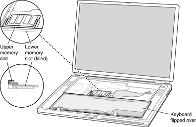

The RAM expansion slots are stacked in a dual socket on the main logic board. The user can get access to the slots by removing the keyboard, as shown in Figure 4-1.
The keyboard is held in place by a locking screw and two latches.
The keyboard locking screw is a slotted screw that is part of the Num Lock LED, which is located between the F5 and F6 function keys. The locking screw can be turned through 360; turning it 180 switches between the locked and unlocked positions. The computer is shipped with the locking screw in the unlocked position.
The two latches are between the ESC key and the F1 key and between the F11 and F12 keys. You release the latches by pulling them toward the front of the computer.
Pulling only on the latches (not on the keys), and without disconnecting the keyboard's membrane cable, you can lift the keyboard up and turn it face down onto the front part of the case.
Figure 4-1 Interior view showing RAM expansion slots
ImportantUse care when inserting or removing a DIMM. Pay particular attention to the retaining tabs on either side of the slot. Make sure to release the tabs before removing a DIMM. When installing a DIMM, make sure the tabs are engaged before closing up the computer.